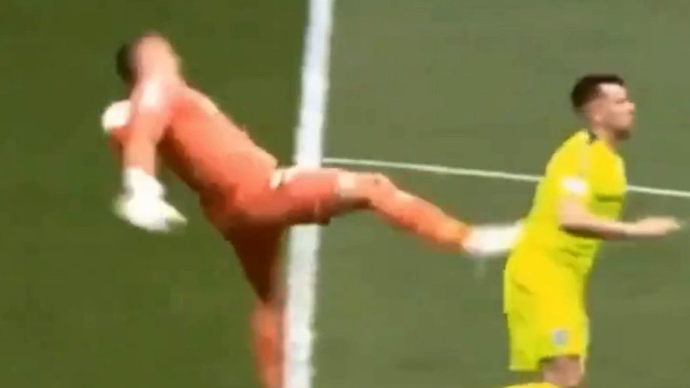

Наши звезды:
1. Влад Тарапанов

В мире футбола есть легенды, которые никогда не забываются, и одна из них - это история
команды
Spectrum и их неустрашимого вратаря. Этот герой, чье имя стало синонимом мужества и
самопожертвования, защищал ворота своей команды с несокрушимой решимостью. В один суровый
день,
когда судьба бросила вызов его доблести, он встал на защиту чести своей команды и ворот,
сломав
руку, но не сломив духа. Он стоял как скала, отражая удары и держа врата неприступными, но
судьба оказалась суровой, и ворота пали. Однако, это не было концом. В конце матча вспыхнула
драка 11 на 11, и этот легендарный вратарь, несмотря на боль и усталость, бросился в бой,
защищая свою команду до последнего вздоха. Его героическое самопожертвование стало символом
несокрушимого духа Spectrum и напоминанием о том, что футбол - это не только игра, где важен
дух, но и важен правильно поставленный хук, где каждый элемент игры играет свою роль в
достижении победы.
Наши фанатки:
1. Дмитрий Вититников
2. Мама Влада Тарапанова